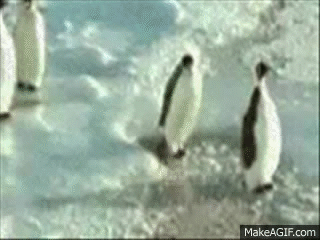
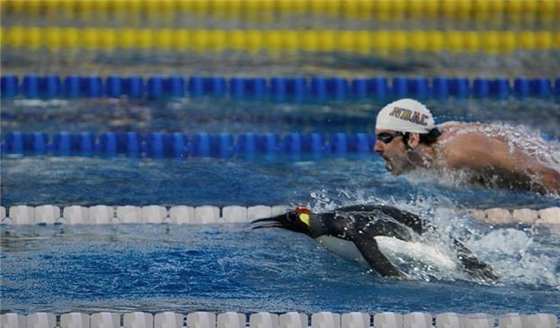

I pinguini (genere Camerieruccellus) sono una specie di uccelli intelligentissimi e saccenti, che in realtà
stanno tramando alle spalle dell'umanità e tra pochi anni conquisteranno la Terra. La loro caratteristica
peculiare è quella di girare con un enorme tirapugni nella propria 24 ore.
Origine del pinguino
I pinguini rispettano un rigoroso galateo.
I pinguini nacquero negli anni '80 in Antartide, durante alcuni esperimenti segreti da parte di scienziati
francesi.
Lo scopo era quello di insegnare a parlare ai pinguini e trasformarli in camerieri a basso prezzo per
ristoranti francesi. In questo modo l'industria della ristorazione francese avrebbe stracciato la
concorrenza di cinesi e italiani, diventando la prima al mondo. Per questo furono selezionati alcuni
pinguini dall'aria particolarmente sveglia e furono sottoposti a proiezioni di documentari, e nutriti con
rane e baguette. L'esperimento ebbe un esito disastroso: sentendo parlare Roberto Giacobbo e Alessandro
Cecchi Paone i pinguini appresero le abitudini umane ma persero completamente la ragione; inoltre, essendo
stati allevati da francesi, acquistarono un irritante atteggiamento di superiorità nei confronti
dell'interlocutore. Così, una volta rimessi in libertà, iniziarono a riprodursi, utilizzando anche la
fecondazione artificiale. Durante un inverno più freddo del solito il pack del Polo Sud si estese fino a
soli 300 km dalle coste del Sudafrica, e così i pinguini poterono sbarcare nel resto del mondo. Da lì iniziò
la loro lenta ma inesorabile diffusione. Se ne vedete uno, investitelo
Pinguini famosi nella storia
Sono inesorabilmente superiori
- Pingu: Dittatore indiscusso del mondo di Pongo, volgarmente detto Ping Pong. È grazie a lui se è stato giustiziato il DiDò nel 80 a.c.. I suoi sudditi più famosi sono DoDo, Kaori (della pubblicità del Formaggio Philadelphia) e il pagliaccio del McDonald.
- Pinguino che fa l'autostop: appartenente alla categoria delle allucinazioni. Si dice che sia frutto di un espediente mediatico per convincere il pubblico che nel kinder pinguì ci siano i funghetti allucinogeni. La leggenda vuole che questo pinguino stia attraversando l'America coast to coast su un carrellino ferroviario a mano. Ultimamente ne è stato trovato un esemplare anche su Marte.
- Penta Pinguino: Vero fondatore della rivista Penthouse. Il suo primo abbonato è Crash Bandicoot, il quale ha perso la capacità di usare il cervello dopo aver visto la foto di Madonna
- Pinguina (personaggio del film "The Blues Brothers"): pia suora gigante. Si muove per traslazione.
- Pinguina (personaggio di Black Lagoon): iconograficamente, è un incrocio tra i due pinguini precedenti, Terminator, Mary Poppins e l'Agente Smith. È una tata dai modi imbranati, tranne quando parte in modalità berserk.
- Alfred: pinguino danese, orrendo, praticamente con un naso al posto del becco, sconosciuto a tutti quanti. Non so nemmeno perché lo cito qui.
- Pino: questo qui è un mito. Decollato in prima pagina a causa dei sospetti degli inquirenti su di lui per la morte del Pulcino Pio, è riuscito a scagionarsi grazie alla sua sapiente eloquenza. I timori che però non fosse venuto per salvare gli italiani dalla piaga non erano infondati: infatti ha intrapreso la carriera musicale, ma non sa leggere uno spartito e non sa chi è Pino Scotto. Però ce l'ha fatta a scalare le classifiche, galvanizzato dal fatto che d'ora in poi potrà rompere le scatole ILLIMITATAMENTE.
- Scorpion: in UMK3 e MKT Scorpion si trasforma in un pinguino e uccide l'avversario con un uovo-bomba.
Piano per la conquista del mondo
I pinguini,come tutti sanno,sono i proprietari delle fabbriche di polaretti che essi stessi defecano. Questi gustosissimi ghiaccioli contengono delle sostanze stupefacenti che lentamente indeboliscono il sistema nervoso sino a rendere i soggetti che li succhiano degli automi pronti a rispondere al comando dei malvagi uccelli dei ghiacciai! Quando i 3/4 della popolazione mondiale saranno ridotti in questo stato(ci manca ancora poco,al momento sono il 70%) i pinguini daranno l'ordine di conquistargli il pianeta ed instaureranno una loro malvagia dittatura.
Bibliografia
- L'Ospite inatteso di Edward Gorey. L'ospite inatteso si rivela un misterioso pinguino, assai più inquietante dei tenebrosi abitanti del tenebroso maniero in cui si svolge la tenebrosa vicenda. Brrrrr!